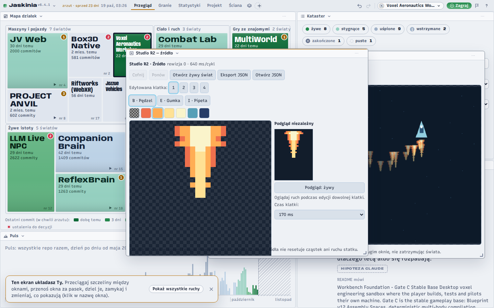
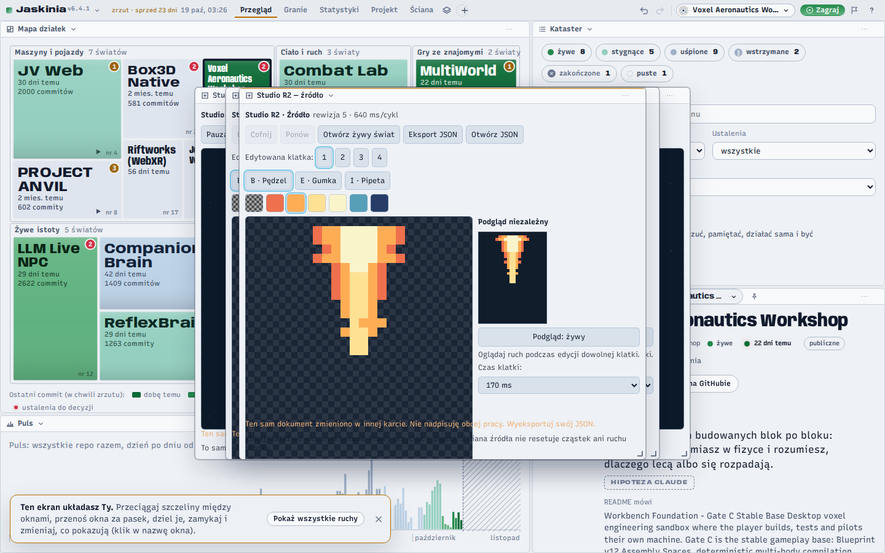
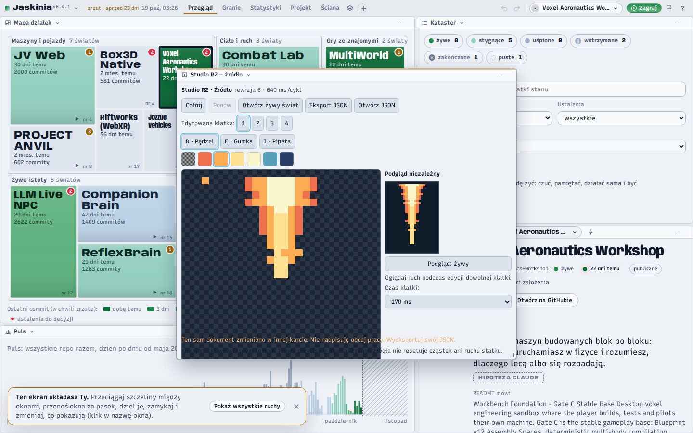
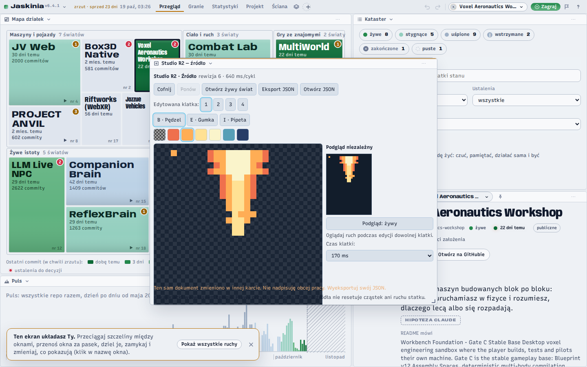

Studio R2: dziesięć przebiegów jednego dnia
To są zrzuty z dziesięciu przebiegów CI gałęzi experiment/browser-studio-r2-source-world-2026-11-10
(Studio R2: edytor źródła i żywy świat w oknach Jaskini), z 10 listopada 2026.
Pięć nie przeszło, pięć przeszło, na przemian: czerwone, czerwone, zielone,
czerwone, zielone, czerwone, zielone, czerwone, zielone, zielone. Ostatnie dwa są zielone —
ale to nie było dojście po prostej.
Do dzisiaj dało się je zobaczyć tylko po ściągnięciu na czyjś dysk:
artefakty CI wygasały 17 XI, więc 13 XI ktoś je skopiował do gałęzi, żeby nie przepadły.
Gałąź nie miała adresu, więc dowód dalej wymagał dysku. Teraz ma adres.
Skąd to jest i jak sprawdzić, że nie zmyślam.
Pliki skopiowane bez zmiany treści z gałęzi dowody/ci-studio-r2-2026-11 w repozytorium
Jozz-Cave-Workbench. Nazwa katalogu to run<numer przebiegu>_<commit>,
więc do źródła wraca się przez
gh api repos/Jozzpoly/Jozz-Cave-Workbench/actions/runs/<numer>.
Ta strona dokłada tylko układ i podpisy — żaden obraz nie był ruszany.

1 nie przeszło
przebieg 42875171360 · commit 13209d8
2 nie przeszło
przebieg 42875409601 · commit 3eb1205
3 przeszło
przebieg 42876119388 · commit 6c8fe96
4 nie przeszło
przebieg 42876521745 · commit 4cd6af9
5 przeszło
przebieg 42876830739 · commit d1e1d26

6 nie przeszło
przebieg 42877182107 · commit fd7963d
 7 przeszło
przebieg
7 przeszło
przebieg 42877424716 · commit a5b25a4
8 nie przeszło
przebieg 42877662340 · commit 3089dbe

9 przeszło
przebieg 42878014859 · commit 259a648

10 przeszło
przebieg 42878283069 · commit 08d3599